Chapter 2: Network & Perimeter Security¶
Every email, video call and online purchase travels across networks as small packets of data, much like cars on roads passing through doors and checkpoints. Network and perimeter security tools guard those roads and doors: they decide what may pass, watch for suspicious traffic, and keep remote workers and cloud apps safely connected. This group covers the main categories, from classic firewalls to modern zero trust services.
2.1 Firewalls & Next-Generation Firewalls¶
A firewall sits between networks (for example, between your office and the internet) and decides which traffic may pass based on rules. A next-generation firewall (NGFW) also recognises which application is being used, who the user is, and can block known attacks and malware inside the traffic.
Three generations of firewall
| Packet filter | Stateful firewall | Next-gen firewall | |
|---|---|---|---|
| Decides using | IPs, ports, protocol | Plus connection state | Plus app, user, content |
| Remembers sessions | No | Yes (state table) | Yes |
| Knows the app | No (port only) | No (port only) | Yes (e.g. Teams vs Dropbox) |
| Blocks exploits/malware | No | No | Yes (IPS, AV, URL filtering) |
| Typical home | Router ACLs | OS host firewalls | Office edge, data centre, cloud |
Each generation keeps the earlier checks and adds deeper understanding of the traffic.
Think of it like…
A firewall is like a building's security desk: it checks every visitor against a guest list and turns away anyone who is not expected. A next-generation firewall also opens bags and recognises known troublemakers by face.
Real-world example
Greenfield Dental has five clinics that share patient records. Their IT partner installs a small NGFW at each clinic that only lets clinic computers reach the records system and blocks all inbound connections from the internet. When a receptionist clicks a link to a known malicious site, the firewall blocks the page and logs the attempt. The partner reviews the monthly report and tightens a rule that was more open than needed.
How it works¶
- Decide what traffic is needed (e.g. staff to the web, customers to the website only).
- Write rules: allow what is needed, deny everything else by default.
- The firewall inspects each connection, and NGFWs also identify apps, users and threats.
- Logs record what was allowed or blocked for troubleshooting and audits.
- Review rules regularly and keep firmware patched, since firewalls themselves are attack targets.
Who uses it
Network and security engineers in virtually every organisation, plus home users through the firewall built into routers and operating systems.
Key takeaway
Start from 'deny all, allow only what is needed', and patch your firewall promptly because internet-facing devices are a favourite target.
Going deeper
- A stateful firewall tracks each connection by its 5-tuple (source and destination IP, source and destination port, protocol), so reply traffic is allowed automatically without broad inbound rules.
- Rules are usually evaluated top to bottom and the first match wins, so a broad 'allow' placed early silently overrides stricter rules below it.
- Vendor datasheets quote several speeds; throughput with full threat prevention and TLS inspection is often several times lower than raw firewall throughput, so size appliances on the lower figure.
- TLS inspection lets an NGFW see inside encrypted traffic by re-signing it with a company certificate; banking and health sites are usually exempted for privacy, and pinned apps may break.
- Firewalls group interfaces into zones (inside, DMZ, outside, guest) and are normally deployed as high-availability pairs that share session state so a failure does not drop connections.
- Edge firewalls and VPN gateways regularly appear in CISA's Known Exploited Vulnerabilities catalogue, so their management interfaces should never be reachable from the internet.
- NIST SP 800-41 Revision 1 gives vendor-neutral guidance on firewall types, policy design and deployment, and is a common reference for audits.
Common mistakes & misconceptions
- Leaving 'any-any' rules from troubleshooting in place. Temporary rules need an owner and an expiry date.
- Filtering only inbound traffic. Outbound (egress) rules stop malware calling home and data leaving the network.
- Exposing the firewall's admin page to the internet. Restrict management to a dedicated admin network or VPN.
- Assuming an NGFW sees everything. Without TLS inspection it judges most web traffic only by metadata.
Try it: Linux (ufw): block incoming traffic by default, allow only SSH and HTTPS¶
sudo ufw default deny incoming
sudo ufw default allow outgoing
sudo ufw allow 22/tcp
sudo ufw allow 443/tcp
sudo ufw enable
sudo ufw status verbose
Popular tools & products¶
| Name | What it does | Example |
|---|---|---|
| Palo Alto Networks NGFW (PA-Series, VM-Series) Palo Alto Networks · Hardware |
Market-leading next-generation firewall that identifies applications and users, with add-on subscriptions for threat prevention, URL filtering and DNS security. | A bank allows its traders to use Microsoft Teams but blocks file sharing to personal cloud storage, using App-ID rules on its PA-Series firewalls. |
| FortiGate Fortinet · Hardware |
Widely deployed NGFW family, from small branch boxes to data-centre appliances, using custom chips for fast inspection and built-in SD-WAN. | A retail chain puts a small FortiGate in each of 200 stores to secure payment traffic and connect stores to head office over SD-WAN. |
| Cisco Secure Firewall Cisco · Hardware |
Cisco's NGFW line (formerly Firepower; also runs classic ASA software) with built-in Snort intrusion prevention, managed via Firewall Management Center or Security Cloud Control. | A university uses Cisco Secure Firewall at its campus edge, with Snort rules blocking exploit attempts against student web servers. |
| Check Point Quantum Check Point Software · Hardware |
Enterprise firewall gateways known for mature central policy management and strong threat prevention features. | An insurance company manages firewalls in 30 countries from one Check Point console, pushing a new blocking rule everywhere in minutes. |
| Juniper SRX Series HPE Juniper Networking · Hardware |
Firewalls and secure routers popular with service providers and large enterprises, running the Junos operating system; Juniper became part of HPE in 2025. | An internet provider uses SRX firewalls to separate customer networks and apply carrier-grade NAT at its data centres. |
| Sophos Firewall (XGS) Sophos · Hardware |
NGFW popular with small and mid-sized businesses, able to share threat information with Sophos endpoint protection to isolate infected PCs. | When a laptop's antivirus detects malware, the Sophos firewall automatically cuts that laptop off from the rest of the office network. |
| SonicWall SonicWall · Hardware |
Long-established firewall brand for small and mid-sized organisations, often sold and managed by IT service providers. | A local accounting firm's IT provider installs a SonicWall TZ appliance to filter web traffic and provide VPN access during tax season. |
| WatchGuard Firebox WatchGuard Technologies · Hardware |
Unified threat management firewalls aimed at small businesses and managed service providers, managed through the WatchGuard Cloud portal. | A managed service provider monitors Firebox appliances at 80 small clients from one cloud dashboard. |
| pfSense Netgate · Open source |
Free, open-source firewall and router software based on FreeBSD, with a web interface; Netgate also sells appliances and a Plus edition. | A school with a tight budget turns an old server into a pfSense firewall with content filtering and a guest Wi-Fi network. |
| OPNsense Deciso (community project) · Open source |
Open-source firewall forked from pfSense, with frequent updates, a modern interface and plugins such as Suricata intrusion prevention. | A home-lab enthusiast runs OPNsense on a mini PC to separate smart-home devices from family laptops. |
| iptables / nftables netfilter project (Linux kernel) · Open source |
The packet-filtering system built into Linux; nftables is the modern replacement for iptables, and tools like ufw and firewalld sit on top. | A web server administrator allows only ports 22 and 443 inbound with a few nftables rules, blocking everything else. |
| Windows Defender Firewall Microsoft · Free |
Host firewall built into Windows that filters traffic per program and network type, centrally configurable via Group Policy or Intune. | An IT team uses Intune to block inbound file sharing on all laptops whenever they connect to public Wi-Fi networks. |
| AWS Network Firewall & Security Groups Amazon Web Services · Cloud service |
Security groups are simple per-server allow lists in AWS; AWS Network Firewall adds managed, stateful inspection for whole cloud networks. | A startup's security group lets the database accept connections only from its app servers, never from the internet. |
| Azure Firewall Microsoft · Cloud service |
Managed, stateful cloud firewall for Azure virtual networks with threat-intelligence filtering, used alongside simple per-resource network security groups. | A hospital routes all outbound traffic from its Azure workloads through Azure Firewall, allowing only approved update and partner websites. |
| Google Cloud NGFW Google Cloud · Cloud service |
Google Cloud's distributed firewall for VPC networks, using tag-based policies with optional intrusion prevention and TLS inspection in its Enterprise tier. | A retailer's Google Cloud project allows only its load balancer to reach web servers, using tag-based firewall policies. |
| Barracuda CloudGen Firewall Barracuda Networks · Hardware |
NGFW available as appliances and cloud images, known for SD-WAN between many sites and central management. | A shipping company links 60 port offices with CloudGen Firewalls, steering traffic over the best available internet link. |
2.2 Firewall & Network Security Policy Management¶
Large organisations can have hundreds of firewalls from different vendors, holding tens of thousands of rules. Policy management tools collect all those rules in one place, find risky, unused or duplicate ones, check them against compliance standards, and automate safe changes. Firewall vendors also offer central managers for their own devices.
Think of it like…
It is like a building manager's master key register: instead of checking every lock by hand, one register shows who can open which door, flags keys nobody has used for years, and records every change.
Real-world example
Westbridge Bank has 400 firewalls from three vendors, and an auditor asks which systems can reach the card-payment servers. Using a policy management tool, the network team answers in an hour instead of weeks. The tool also finds 2,000 rules that have not matched any traffic in a year, and one rule letting a test network reach payments. The team removes them through approved change requests.
How it works¶
- Connect the tool to firewalls, cloud accounts and routers so it can read their rules.
- It builds a map of the network showing which paths are open.
- Reports flag risky, duplicate and unused rules, plus compliance gaps (for example against PCI DSS).
- New access requests are checked for risk, then designed and pushed automatically.
- Every change is recorded for auditors, and the review repeats as the network grows.
Who uses it
Network security engineers, firewall administrators, auditors and compliance teams in banks, telecoms, government and other large organisations.
Key takeaway
Review rules on a schedule and remove any nobody can justify, since every unnecessary 'allow' is a door an attacker might use; keep management consoles patched and off the internet.
Going deeper
- PCI DSS v4.0 requirement 1.2.7 asks organisations to review network security control configurations at least every six months, which drives much of this market.
- Clean-up reports look for shadowed rules (never reachable because an earlier rule matches first), redundant duplicates, overly broad 'any' rules and rules with zero hits.
- Path analysis models routing and NAT across the network so the tool can tell exactly which firewalls a new connection crosses before anyone edits a rule.
- Many teams now manage rules as code: policies live in Git, changes go through pull requests, and tools like Ansible or Terraform push them to firewalls and clouds.
- Rule recertification assigns each rule an owner and an expiry date; rules nobody re-justifies are disabled first, then deleted after a safe waiting period.
- Central management consoles hold admin credentials for every firewall, so they are high-value targets and must be patched, segmented and protected with MFA.
Common mistakes & misconceptions
- Deleting every zero-hit rule immediately. Some support yearly jobs or disaster recovery; disable and monitor before removing.
- Allowing emergency changes outside the tool. Undocumented edits break the audit trail and the network map.
- Optimising rule counts instead of risk. One overly broad rule matters more than a hundred tidy duplicates.
Try it: Linux: list firewall rules with hit counters to spot ones that never match traffic¶
sudo iptables -L INPUT -n -v --line-numbers
Popular tools & products¶
| Name | What it does | Example |
|---|---|---|
| Tufin Orchestration Suite Tufin · Commercial |
Centralises rule management across many firewall brands and clouds, checks changes against security policy, and automates approved changes. | A telecom's network team uses Tufin to check whether a new partner connection breaks segmentation policy before pushing it to six firewalls. |
| AlgoSec Horizon AlgoSec · Commercial |
Application-centric platform that links business applications to the firewall rules they depend on, automating changes, clean-up and compliance reports. | Before retiring an old server, an insurer uses AlgoSec to find and safely remove every firewall rule that existed only for it. |
| FireMon Policy Manager FireMon · Commercial |
Monitors firewall rules in real time across vendors and clouds, scoring risk and flagging unused or overly permissive rules. | FireMon alerts a retailer's security team when someone adds an 'allow any' rule to a store firewall outside a change window. |
| Palo Alto Networks Panorama / Strata Cloud Manager Palo Alto Networks · Commercial |
Central managers for Palo Alto firewalls: Panorama runs on-premises, while the newer cloud-based Strata Cloud Manager also covers Prisma SASE. | A university pushes one updated web-filtering policy to 40 campus firewalls from Panorama in a single commit. |
| FortiManager Fortinet · Commercial |
Central management for large numbers of FortiGate firewalls; a critical 2024 flaw (FortiJump) showed why management consoles must be patched. | A retail chain updates the firewall rules in all 300 stores overnight from FortiManager using a shared policy template. |
| Cisco Security Cloud Control & Firewall Management Center Cisco · Commercial |
Cisco's cloud manager (formerly Defense Orchestrator) and on-premises console for configuring Secure Firewall and ASA devices consistently. | A manufacturer uses Security Cloud Control to find conflicting rules across its plant firewalls and fix them from one screen. |
| Check Point Quantum Smart-1 Check Point Software · Commercial |
Check Point's central security management, as appliances or the Smart-1 Cloud service, for policies, logs and events across its gateways. | An airline manages firewalls at 20 airports with Smart-1 Cloud, reviewing logs and pushing policy without running local servers. |
| Titania Nipper Titania · Commercial |
Audits firewall, router and switch configurations offline against security benchmarks, explaining each weakness and how to fix it. | A defence contractor runs Nipper on exported router configs before an audit and fixes the weak SNMP settings it reports. |
| ManageEngine Firewall Analyzer ManageEngine (Zoho) · Commercial |
Collects firewall logs and configurations to report on rule usage, configuration changes, compliance and suspicious traffic. | A mid-sized company's monthly Firewall Analyzer report shows 150 unused rules, which the admin removes after checking with their owners. |
| Batfish Batfish project (AWS) · Open source |
Analyses network and firewall configuration files offline to predict what traffic will be allowed, catching mistakes before changes go live. | A cloud team runs Batfish in its change pipeline to prove a router update will not expose the database network to the internet. |
| Capirca Google (open-source project) · Open source |
Generates firewall and router access lists for many platforms from one vendor-neutral policy file, so rules stay consistent. | A network team writes one policy for web access and Capirca outputs matching Juniper, Cisco and iptables rules. |
| Juniper Security Director HPE Juniper Networking · Commercial |
Central policy, logging and threat-management console for Juniper SRX firewalls, available on-premises or as a cloud service. | A service provider updates segmentation rules on 120 SRX firewalls from Security Director Cloud during one maintenance window. |
2.3 Intrusion Detection & Prevention Systems¶
An intrusion detection system (IDS) watches network traffic or computer activity and raises an alarm when it sees signs of an attack. An intrusion prevention system (IPS) goes one step further and blocks the bad traffic automatically. Network-based versions watch the wire; host-based versions watch a single computer's logs and files.
Think of it like…
An IDS is like a burglar alarm that sounds when a window is forced; an IPS is like a guard who also slams the window shut.
Real-world example
Riverside Library runs Suricata on a small server connected to its main switch. One evening it flags a public PC trying to connect to a known botnet control server. The IT volunteer sees the alert the next morning, reimages the PC, and turns on blocking mode for that rule set. On the library's web server, Fail2ban bans addresses that keep guessing passwords.
How it works¶
- Place sensors where traffic flows (network edge, core switch) or install agents on servers.
- Load rules or signatures that describe known attacks, and enable behaviour checks.
- The system compares live traffic or logs against those rules.
- Matches generate alerts (IDS) or are blocked automatically (IPS).
- Tune rules over time to reduce false alarms and keep signatures updated.
Who uses it
Security operations teams, network engineers, managed security providers and Linux administrators in organisations of all sizes.
Key takeaway
Start in alert-only mode, tune out noisy rules, then switch the trusted rules to blocking.
Going deeper
- Passive IDS sensors receive a copy of traffic from a switch SPAN port or tap and cannot block; an inline IPS sits in the path and must be configured to fail open or fail closed.
- A rule has an action (alert, drop), a header (protocol, addresses, ports, direction) and options such as content matches, plus a unique sid and revision number for tracking.
- Popular rule feeds are Proofpoint's Emerging Threats (free ET Open and paid ET Pro) and Cisco Talos rules for Snort; most teams also write a few local rules.
- With most traffic encrypted, IDS increasingly relies on metadata: TLS server names, certificate details, JA3/JA4 client fingerprints and DNS lookups rather than payload content.
- Host-based IDS such as Wazuh and OSSEC add file-integrity monitoring, rootkit checks and log analysis, catching activity on encrypted or local channels a network sensor never sees.
- Virtual patching uses IPS signatures to block attempts against a known vulnerability until the real software fix can be installed and tested.
Common mistakes & misconceptions
- Turning on every rule in blocking mode on day one. Expect false positives; start in alert mode and tune.
- Placing a sensor where it sees only part of the traffic. Check that both directions and internal (east-west) flows are mirrored.
- Letting signatures go stale. Rule sets need daily updates, or new threats pass unnoticed.
Try it: A harmless custom Suricata/Snort-style rule that alerts on a test string¶
alert http any any -> $HOME_NET any (msg:"LOCAL test rule - harmless"; content:"testmyids"; sid:1000001; rev:1;)
Popular tools & products¶
| Name | What it does | Example |
|---|---|---|
| Snort Cisco (Talos) · Open source |
The classic open-source network IDS/IPS; Snort 3 is the current version, with free community and paid subscriber rules from Cisco Talos. | A small ISP runs Snort inline to block exploit attempts against customer-facing mail servers. |
| Suricata Open Information Security Foundation (OISF) · Open source |
High-performance, multi-threaded IDS/IPS that also logs detailed protocol metadata; compatible with most Snort-style rules. | A company runs Suricata with the free Emerging Threats rules and ships its alerts into a SIEM for analysts to review. |
| Zeek Zeek Project · Open source |
Network monitor (formerly Bro) that turns traffic into rich logs of connections, DNS, HTTP and certificates, used for detection and investigations. | Investigators search Zeek DNS logs to find every computer that looked up a malicious domain during the past month. |
| Security Onion Security Onion Solutions · Open source |
Free Linux platform bundling Suricata, Zeek, full packet capture and dashboards for network security monitoring and threat hunting. | A college security club installs Security Onion to monitor its lab network and practise investigating alerts. |
| Wazuh Wazuh Inc. · Open source |
Open-source host intrusion detection (HIDS) agent, grown from OSSEC, that flags suspicious log events, file-integrity changes and risky settings on each server. | Wazuh alerts an admin when a critical system file on a web server is changed outside the approved maintenance window. |
| OSSEC OSSEC Project · Open source |
Long-standing open-source host IDS that analyses logs, monitors file integrity and detects rootkits on individual machines. | A hosting company runs OSSEC agents on Linux servers to spot repeated failed logins and unexpected file changes. |
| Fail2ban Fail2ban community · Open source |
Lightweight tool that watches log files and temporarily bans IP addresses that show abusive behaviour, such as repeated password guessing. | After ten failed SSH logins from one address in five minutes, Fail2ban adds a firewall rule blocking it for an hour. |
| CrowdSec CrowdSec · Freemium |
Open-source, Fail2ban-like engine that also shares attacker IP reputation across its user community to block known bad actors early. | A blogger's server blocks an address before it attacks, because other CrowdSec users already reported it scanning for WordPress flaws. |
| TrendAI TippingPoint TrendAI (Trend Micro's business arm) · Hardware |
Dedicated inline IPS appliances (formerly Trend Micro TippingPoint) that block network exploits, including 'virtual patching' for systems that cannot be updated quickly. | A hospital uses TippingPoint to shield unpatched medical devices from a newly published vulnerability until the vendor releases a fix. |
| Trellix Intrusion Prevention System Trellix · Commercial |
Enterprise network IPS (formerly McAfee Network Security Platform) that inspects traffic for exploits, malware and suspicious behaviour. | A government agency deploys Trellix IPS sensors between its office network and data centre to block lateral attacks. |
| Proofpoint Emerging Threats (ET Open / ET Pro) Proofpoint · Freemium |
Widely used rule sets for Suricata and Snort: ET Open is free and community-fed, ET Pro adds faster, broader commercial coverage. | A university's Suricata sensors download the latest ET Open rules every night through the suricata-update tool. |
2.4 Network Detection & Response (NDR)¶
Network Detection and Response tools learn what normal traffic looks like across a whole network and flag unusual behaviour that rule-based tools may miss, such as a server suddenly sending gigabytes of data abroad. They help analysts investigate and can trigger responses like isolating a device.
Think of it like…
NDR is like an experienced shopping-centre security team watching the CCTV: they know the usual crowd patterns and notice when someone keeps trying locked doors at night.
Real-world example
Northwind Logistics notices nothing wrong, but its NDR tool flags a finance PC making encrypted connections at 3 a.m. to a rarely seen cloud server and quietly scanning other machines. The security team investigates and finds stolen credentials being used by an attacker. They isolate the PC, reset passwords and block the destination, stopping a likely ransomware attack before files were encrypted.
How it works¶
- Copy network traffic to NDR sensors using switch mirror ports, network taps or cloud traffic mirroring.
- The tool builds a baseline of normal behaviour for each device and user.
- Machine learning and threat intelligence spot anomalies such as scanning, data exfiltration or command-and-control traffic.
- Alerts arrive with context, such as which devices talked and how much data moved.
- Analysts investigate and respond, often by integrating with firewalls, EDR or SOAR tools.
Who uses it
Security operations centres (SOCs), incident responders and threat hunters in mid-sized and large organisations, including hospitals and factories with devices that cannot run security software.
Key takeaway
NDR shines where you cannot install agents (printers, cameras, medical and industrial devices), so pair it with endpoint protection for full coverage.
Going deeper
- NDR completes the 'SOC visibility triad' with SIEM logs and EDR: it still sees devices that cannot run agents and attackers who disable endpoint tools.
- Because most traffic is encrypted, NDR analyses metadata such as packet sizes, timing, certificates and JA4 fingerprints; regular, evenly spaced connections can reveal malware 'beaconing'.
- East-west traffic between internal systems is the key blind spot NDR covers, catching lateral movement such as unusual SMB, RDP or remote-management connections.
- In the cloud, sensors are fed by services such as AWS VPC Traffic Mirroring and Google Cloud Packet Mirroring, or more cheaply by flow logs with less detail.
- Response options include alerting, telling a firewall or NAC to block a device, triggering EDR isolation, or sending TCP resets, usually orchestrated through SOAR.
- Storing full packets is expensive, so most NDR keeps rich metadata for months and full packet capture for days, often only for selected traffic.
Common mistakes & misconceptions
- Expecting NDR to read encrypted payloads. It works mainly from behaviour and metadata unless traffic is decrypted elsewhere.
- Monitoring only the internet edge. Ransomware spreads internally, so mirror core and data-centre traffic too.
- Skipping the learning period. Baselines need weeks of normal traffic before anomaly alerts become trustworthy.
Popular tools & products¶
| Name | What it does | Example |
|---|---|---|
| Darktrace / NETWORK Darktrace · Commercial |
Self-learning AI that models normal behaviour on a network and can automatically slow or block unusual connections. | Darktrace notices a laptop uploading unusual volumes of data to a file-sharing site and blocks just that connection for the user. |
| Vectra AI Platform Vectra AI · Commercial |
Uses AI to detect attacker behaviour across network, identity and cloud traffic, prioritising the most urgent threats for analysts. | Vectra links odd Microsoft 365 logins with internal network scanning, giving analysts one high-priority incident instead of dozens of alerts. |
| ExtraHop RevealX ExtraHop · Commercial |
NDR that decodes many network protocols in real time, useful for both threat detection and application performance troubleshooting. | A hospital uses RevealX to spot unusual database queries from a compromised workstation and to trace slow medical-record lookups. |
| Corelight Corelight · Commercial |
Commercial NDR built on open-source Zeek and Suricata, producing detailed network evidence for detection and investigations. | Incident responders use Corelight logs to reconstruct exactly which servers an attacker contacted during a breach. |
| Cisco Secure Network Analytics Cisco · Commercial |
Formerly Stealthwatch; analyses flow records (NetFlow) from existing switches and routers to spot suspicious behaviour without placing sensors everywhere. | A university detects a compromised lab server scanning other campus machines by analysing NetFlow data from its Cisco switches. |
| Arista NDR Arista Networks · Commercial |
NDR (formerly Awake Security) that identifies devices and entities on the network and uses AI to spot threatening behaviour. | Arista NDR identifies an unknown device plugged into a meeting room port and flags its suspicious traffic to the SOC. |
| FortiNDR Fortinet · Commercial |
Fortinet's NDR that uses machine learning to detect malware and anomalies, integrating with FortiGate firewalls for automatic blocking. | FortiNDR spots ransomware-like file activity on the network and tells the FortiGate to quarantine the infected PC. |
| Trellix NDR Trellix · Commercial |
Network detection and response combining intrusion detection, sandboxing and analytics to find advanced threats inside networks. | Trellix NDR detonates a suspicious downloaded file in a sandbox and alerts analysts when it tries to contact an attacker server. |
| Stamus Security Platform Stamus Networks · Commercial |
NDR built on open-source Suricata, focused on clear, high-confidence detections and evidence for analysts. | A managed security provider uses Stamus to give small clients readable reports on compromised devices found in their traffic. |
| Nozomi Networks Guardian Nozomi Networks (Mitsubishi Electric) · Commercial |
Passive monitoring for industrial (OT) and IoT networks that inventories devices and detects threats without disturbing machinery. | A water utility uses Guardian to spot an unauthorised laptop sending commands to pump controllers. |
| Progress Flowmon Progress Software · Commercial |
Flow-based network monitoring and anomaly detection that turns NetFlow/IPFIX into performance and security insight. | A regional hospital uses Flowmon to spot a workstation scanning other devices at night using only router flow data. |
2.5 Network Monitoring & Traffic Analysis¶
These tools let people see what is happening on a network: which devices are up, how busy the links are, and what is inside the packets. They are used first for troubleshooting and performance, but the same visibility is vital for spotting and investigating security problems.
Three ways to see a network
| SNMP / health | Flow (NetFlow, IPFIX, sFlow) | Full packet capture | |
|---|---|---|---|
| You learn | Up/down, CPU, link load | Who talked to whom, how much | Every byte exchanged |
| Data volume | Tiny | Moderate | Huge (~10.8 TB/day per busy 1 Gbps) |
| Answers | Is it working? | What is using the link? | Exactly what happened? |
| Kept for | Months to years | Weeks to months | Hours to days |
| Tools | PRTG, Zabbix, LibreNMS | ntopng, Kentik, NetFlow Analyzer | Wireshark, tcpdump, Arkime |
Each step down gives more detail but costs far more storage and processing.
Think of it like…
Network monitoring is like a traffic control centre with cameras and road sensors: it shows jams, broken traffic lights and unusual vehicles in real time.
Real-world example
Staff at Maple Accounting complain that the internet is crawling every afternoon. The IT administrator checks PRTG and sees the office link at 100 percent from 2 p.m. Using ntopng she finds one PC streaming large backups to a personal cloud account. A quick Wireshark capture confirms it, and the backup is rescheduled overnight.
How it works¶
- Collect data: device health via SNMP, traffic summaries via NetFlow/sFlow, or full packets via capture.
- Dashboards show availability, bandwidth and top talkers in real time.
- Alerts fire when a device goes down or traffic crosses a threshold.
- For deep problems, capture packets and inspect them in a protocol analyser.
- Keep historical data to compare against normal and support investigations.
Who uses it
Network administrators, help desks, security analysts, students learning networking, and managed service providers.
Key takeaway
Only capture traffic on networks you own or are authorised to monitor, and protect captures because they may contain sensitive data.
Going deeper
- SNMP versions 1 and 2c send their 'community string' password in clear text; SNMPv3 with authPriv adds authentication and encryption and should be the default.
- IPFIX (RFC 7011) is the standards-based successor to Cisco's NetFlow v9, while sFlow samples one packet in N, trading accuracy for very low overhead on fast links.
- A switch SPAN (mirror) port is cheap but can drop packets when busy; a hardware network tap copies every packet passively and is preferred for security evidence.
- Packets are saved as pcap or the newer pcapng format; Wireshark's display filters (such as http.request) differ from the capture filters (BPF) used by tcpdump.
- Modern network devices also push streaming telemetry (for example gNMI with OpenConfig models), giving second-by-second data instead of slow SNMP polling.
- Security teams reuse monitoring data: a sudden spike in outbound traffic or a new device appearing in SNMP inventory can be the first hint of an incident.
Common mistakes & misconceptions
- Leaving SNMP on default 'public' or 'private' strings. Change them, or better, use SNMPv3 only.
- Capturing without permission or storing captures carelessly. Packet files can contain passwords, health data and personal information.
- Monitoring only availability. A link can be 'up' while it is quietly carrying stolen data.
Try it: Capture 20 DNS packets with tcpdump, then the equivalent Wireshark display filter¶
sudo tcpdump -i eth0 -c 20 -n port 53
# Wireshark display filter:
dns && ip.addr == 192.168.1.10
Popular tools & products¶
| Name | What it does | Example |
|---|---|---|
| Wireshark Wireshark Foundation · Open source |
The world's most popular packet analyser, decoding hundreds of protocols in a graphical interface for troubleshooting and learning. | A help-desk engineer captures traffic from a failing VoIP phone and sees it cannot reach the call server's port. |
| tcpdump The Tcpdump Group · Open source |
Command-line packet capture tool available on most Linux and macOS systems; captures can be opened later in Wireshark. | An admin captures traffic on a remote server with tcpdump, downloads the file and analyses it in Wireshark. |
| ntopng ntop · Freemium |
Web-based real-time traffic monitor showing top talkers, applications and flows; free community edition plus paid editions. | A school uses ntopng to find which classroom device is consuming most of its limited internet bandwidth. |
| PRTG Network Monitor Paessler · Commercial |
Easy-to-start monitoring tool using 'sensors' to track devices, bandwidth and services; free for a small number of sensors. | A small manufacturer gets a text message from PRTG when the main file server's disk is nearly full. |
| SolarWinds Network Performance Monitor SolarWinds · Commercial |
Enterprise network monitoring with maps, performance tracking and alerting, part of the wider SolarWinds observability suite. | A bank's network team uses NPM maps to see instantly which branch routers are offline after a power cut. |
| Zabbix Zabbix LLC · Open source |
Free, open-source monitoring platform for networks, servers and applications, with templates, alerting and dashboards. | A hosting company monitors 2,000 servers and switches with Zabbix, alerting on-call engineers through chat. |
| Gigamon Gigamon · Hardware |
Network packet brokers that copy, filter and distribute traffic to security and monitoring tools so each sees exactly what it needs. | A telecom company uses Gigamon to send one copy of traffic to its NDR and another to its performance monitor. |
| Arkime Arkime project · Open source |
Large-scale full packet capture and search system (formerly Moloch), letting analysts search and download stored traffic. | During an investigation, analysts use Arkime to retrieve the exact packets exchanged with a suspicious server last week. |
| Nagios Nagios Enterprises · Open source |
Veteran monitoring system checking whether hosts and services are up; open-source Nagios Core plus commercial Nagios XI. | A university's Nagios dashboard turns red when the email server stops responding, paging the on-call admin. |
| LibreNMS LibreNMS community · Open source |
Open-source network monitoring that auto-discovers devices via SNMP and graphs bandwidth, errors and health. | A community ISP uses LibreNMS to graph traffic on every customer link and spot faulty cables from rising error counts. |
| ManageEngine NetFlow Analyzer ManageEngine (Zoho) · Commercial |
Analyses NetFlow, sFlow and similar flow data to show who and what is using bandwidth, with security anomaly reports. | An IT team discovers that video streaming uses 40 percent of office bandwidth and sets QoS rules to protect business apps. |
| Kentik Kentik · Cloud service |
Cloud-based network observability that analyses flow data at large scale across data centres, clouds and internet links. | A streaming service uses Kentik to spot a sudden traffic flood and identify which networks it comes from. |
| Checkmk Checkmk GmbH · Freemium |
Monitoring platform with automatic service discovery for networks, servers and cloud, offered as a free edition plus commercial editions. | A university IT team adds 400 switches to Checkmk, which discovers their ports and alerts on errors automatically. |
| Prometheus & Grafana CNCF (Prometheus), Grafana Labs · Open source |
Prometheus collects time-series metrics, including network data via its SNMP exporter, and Grafana turns them into dashboards and alerts. | A DevOps team graphs firewall and switch bandwidth in Grafana next to application latency to spot network bottlenecks. |
2.6 Web Application Firewalls, Bot Management & DDoS Protection¶
A web application firewall (WAF) sits in front of a website or API and blocks malicious requests, such as attempts to trick the database or inject scripts. Many WAFs run on load balancers (devices that share traffic across several servers). Bot management separates real people from automated scripts, and DDoS protection absorbs floods of fake traffic meant to knock a site offline (DDoS means distributed denial of service).
Think of it like…
It is like a nightclub with a bouncer checking each guest (WAF), a host spotting fake guests sent in by a rival (bot management), and crowd barriers that stop a mob from blocking the entrance (DDoS protection).
Real-world example
Bluebell Tickets sells concert tickets online. On launch day, scalper bots try to buy thousands of tickets and attackers send a large traffic flood. Their cloud WAF absorbs the flood at the provider's network, challenges the bots, and blocks SQL injection attempts against the login form. Real fans get through and the site stays up.
How it works¶
- Route website traffic through the WAF or protection service, usually by changing DNS.
- Enable managed rule sets (such as the OWASP Core Rule Set) covering common web attacks.
- Add rate limits and bot detection for logins, checkouts and APIs.
- DDoS defences absorb and filter large floods before they reach your servers.
- Review logs, tune false positives, and lock servers so they only accept traffic from the protection service.
Who uses it
Web developers, DevOps and security teams at online shops, banks, media sites, governments and any organisation with public websites or APIs.
Key takeaway
A WAF buys time but does not replace secure code: fix the underlying vulnerability too, and make sure attackers cannot bypass the WAF by reaching your server directly.
Going deeper
- DDoS attacks come in two broad kinds: network floods (layers 3 and 4) measured in bits or packets per second, and application floods (layer 7) measured in requests per second.
- The 2023 HTTP/2 'Rapid Reset' technique (CVE-2023-44487) produced record floods, including about 398 million requests per second seen by Google, and was mitigated mainly by large edge providers.
- The OWASP Core Rule Set uses anomaly scoring: each suspicious pattern adds points, and a request is blocked only when its total passes a threshold (5 by default); paranoia levels 1-4 trade coverage for false positives.
- A negative security model blocks known-bad patterns, while a positive model allows only what matches an API schema such as OpenAPI; API protection increasingly uses the positive model.
- Bot management combines TLS and HTTP fingerprints (such as JA4), behaviour signals like mouse movement and request timing, and reputation, reserving visible challenges for uncertain cases.
- DDoS services run 'always-on' (traffic always passes through) or 'on-demand' (traffic is diverted by DNS or BGP when an attack starts), trading cost against reaction time.
Common mistakes & misconceptions
- Leaving the origin server's real IP address reachable. Attackers bypass the WAF entirely; allow only the provider's ranges or authenticated connections.
- Running the WAF in detection-only mode forever. Tune false positives, then switch trusted rules to blocking.
- Treating the WAF as a fix. It reduces exposure, but the vulnerable code still needs patching.
Try it: ModSecurity config skeleton loading the OWASP Core Rule Set (detection only)¶
# modsecurity.conf (excerpt)
SecRuleEngine DetectionOnly
SecRequestBodyAccess On
Include /etc/modsecurity/crs/crs-setup.conf
Include /etc/modsecurity/crs/rules/*.conf
Popular tools & products¶
| Name | What it does | Example |
|---|---|---|
| Cloudflare (WAF, Bot Management, DDoS Protection) Cloudflare · Cloud service |
Global network in front of millions of websites, providing WAF, bot management and unmetered DDoS protection, with a generous free plan. | A small online shop moves its DNS to Cloudflare's free plan and gets DDoS protection and basic WAF rules within minutes. |
| Akamai App & API Protector / Prolexic Akamai · Cloud service |
Akamai's edge WAF and API protection, plus Prolexic for large-scale network DDoS protection of whole data centres. | A major bank routes its online banking through Akamai and uses Prolexic to absorb a multi-hundred-gigabit attack. |
| AWS WAF & AWS Shield Amazon Web Services · Cloud service |
AWS WAF filters web requests to AWS-hosted apps; Shield Standard gives basic DDoS protection free, Shield Advanced adds response support. | A startup adds AWS managed rules to its load balancer to block common attacks and rate-limit its login API. |
| Azure Web Application Firewall & DDoS Protection Microsoft · Cloud service |
WAF available on Azure Front Door and Application Gateway, plus Azure DDoS Protection for virtual networks. | A council website on Azure uses Front Door WAF to block bad bots and SQL injection attempts on its forms. |
| Google Cloud Armor Google Cloud · Cloud service |
WAF and DDoS protection for apps behind Google Cloud load balancers, including preconfigured OWASP rules and adaptive protection. | A gaming company uses Cloud Armor to block traffic floods aimed at its login servers during a big launch. |
| Imperva Application Security Imperva (a Thales company) · Commercial |
Cloud and on-premises WAF, bot protection, API security and DDoS mitigation for enterprises. | An airline uses Imperva bot protection to stop scripts that scrape fares and hold seats without buying. |
| F5 BIG-IP Advanced WAF / F5 Distributed Cloud F5 · Commercial |
Enterprise WAF on F5's widely used BIG-IP load balancers, plus a SaaS platform for web, API, bot and DDoS protection. | A retailer enables Advanced WAF on existing BIG-IP appliances to protect its checkout pages without new hardware. |
| NetScaler ADC & Web App Firewall NetScaler (Cloud Software Group) · Commercial |
Widely used load balancer (formerly Citrix ADC) with a built-in WAF and bot protection; its gateway has had serious flaws, so patch promptly. | A hospital turns on the WAF module of the NetScaler already balancing its patient portal, blocking injection attempts without buying new hardware. |
| Fastly Next-Gen WAF Fastly · Cloud service |
WAF (originally from Signal Sciences) that runs at Fastly's edge or alongside apps, known for low false positives. | A news site runs Fastly Next-Gen WAF to block attack traffic without accidentally blocking readers' comments. |
| Radware Radware · Commercial |
DDoS protection appliances and cloud services, plus WAF and bot manager, often used by service providers and banks. | A national telecom uses Radware DefensePro appliances to filter DDoS floods before they hit customer networks. |
| NETSCOUT Arbor NETSCOUT · Hardware |
Long-established DDoS protection products (Arbor Edge Defense, Sightline/TMS) widely used by internet providers and enterprises. | An internet provider's Arbor system detects an attack on a customer and diverts that traffic for cleaning automatically. |
| ModSecurity + OWASP Core Rule Set OWASP (originally Trustwave) · Open source |
Open-source WAF engine for Apache, Nginx and IIS, paired with the free OWASP CRS rules that block common web attacks. | A university IT team adds ModSecurity with CRS to its Apache servers to block injection attacks on old department sites. |
| HUMAN Security HUMAN Security · Commercial |
Bot and fraud protection that detects automated traffic, account takeovers and fake ad clicks. | An online retailer uses HUMAN to stop bots testing stolen passwords against customer accounts. |
| DataDome DataDome · Commercial |
Real-time bot protection for websites, mobile apps and APIs, using machine learning to tell humans from bots. | A classified-ads site uses DataDome to block scrapers copying its listings while letting real visitors browse. |
| OWASP Coraza OWASP · Open source |
Modern open-source WAF engine written in Go, compatible with ModSecurity rule language and the OWASP Core Rule Set. | A platform team embeds Coraza in its Caddy and Envoy proxies to apply the Core Rule Set without running ModSecurity. |
2.7 SASE & SSE: Secure Web Gateway, CASB and Zero Trust Network Access¶
Zero trust means 'never trust, always verify': nobody is trusted just because they are on the office network, so every request is checked for who you are, whether your device is healthy, and whether you need that app. SSE (security service edge) delivers this from the cloud: a secure web gateway (a filtering web proxy) checks internet use, a CASB (cloud access security broker) controls cloud apps, and ZTNA (zero trust network access) connects users only to the specific apps they need. SASE (secure access service edge) adds networking such as SD-WAN on top.
Think of it like…
Old network security was a castle with a moat: once inside, you could wander anywhere. Zero trust is like a modern hotel where your key card opens only your room and the gym, and is checked at every door.
Real-world example
Harbour Health has 3,000 staff working from clinics, homes and cafés. Instead of a traditional VPN, every laptop runs a lightweight SSE agent. A nurse can open the scheduling app only after signing in with multi-factor authentication on a managed, updated laptop. When someone tries to upload patient files to a personal cloud drive, the CASB blocks it, and risky websites are filtered whatever network the laptop is on.
How it works¶
- Install a small agent on devices or route branch traffic to the provider's cloud.
- Users sign in through the company identity provider with multi-factor authentication.
- Policies check user, device health, location and app before allowing each connection.
- Web traffic is inspected for threats, and cloud app use is checked for data leaks.
- Private apps are published only to authorised users, never exposed to the open internet.
Who uses it
Large and mid-sized organisations with remote or hybrid staff and heavy cloud use, typically run by security architects and network teams.
Key takeaway
Roll out zero trust app by app, starting with the most sensitive systems, and tie every access decision to strong identity and device checks.
Going deeper
- Gartner coined 'SASE' in 2019 and 'SSE' in 2021; SSE is the security half (SWG, CASB, ZTNA), while SASE adds wide-area networking such as SD-WAN.
- NIST SP 800-207 (2020) defines zero trust architecture with a policy engine and policy administrator that decide, and policy enforcement points that allow or block each session.
- CISA's Zero Trust Maturity Model v2.0 (2023) measures progress across five pillars: identity, devices, networks, applications and workloads, and data.
- ZTNA brokers connections outward from a connector inside the private network, so internal apps need no open inbound ports and are invisible to internet scanners.
- CASB works two ways: inline (proxying live traffic to block actions) and API-based (scanning data already stored in SaaS apps such as Microsoft 365 or Google Drive).
- SSE providers run dozens to hundreds of points of presence; user experience depends on a nearby PoP, so check locations and latency for every country where staff work.
Common mistakes & misconceptions
- Treating ZTNA as just a newer VPN. Granting broad network ranges recreates the old flat-access problem.
- Skipping device posture checks. Strong login on an infected, unmanaged laptop still lets malware reach the app.
- Forgetting exceptions for TLS inspection. Banking, health and pinned apps need bypass rules to avoid breakage and privacy issues.
Popular tools & products¶
| Name | What it does | Example |
|---|---|---|
| Zscaler Zero Trust Exchange (ZIA & ZPA) Zscaler · Cloud service |
Leading cloud security platform: Zscaler Internet Access secures web use; Zscaler Private Access connects users to internal apps without a VPN. | A global manufacturer retires its VPN, letting engineers reach internal design tools through ZPA after identity and device checks. |
| Netskope One Netskope · Cloud service |
SSE/SASE platform known for its strong CASB and data protection, understanding detailed actions inside cloud apps. | Netskope lets staff view files in a personal Dropbox but blocks uploading customer data to it. |
| Palo Alto Networks Prisma Access Palo Alto Networks · Cloud service |
Cloud-delivered SASE applying Palo Alto firewall-grade security to remote users and branches, part of Prisma SASE. | A bank extends the same security policies used in its data centre to staff working from home through Prisma Access. |
| Cloudflare One Cloudflare · Cloud service |
SASE platform with zero trust access, secure web gateway, CASB and browser isolation on Cloudflare's network; free for up to 50 users. | A 30-person startup uses Cloudflare One to give contractors access to one internal dashboard, nothing else. |
| Cisco Secure Access Cisco · Cloud service |
Cisco's SSE service combining secure web gateway, CASB, ZTNA and DNS security, building on Cisco Umbrella. | A school district uses Cisco Secure Access to filter student web use and give teachers access to the grading system. |
| Cato SASE Cloud Cato Networks · Cloud service |
Single-vendor SASE combining SD-WAN networking and security in one cloud service, popular with mid-sized organisations. | A logistics firm connects 40 warehouses and remote staff through Cato, managing networking and security from one console. |
| Fortinet FortiSASE Fortinet · Cloud service |
Fortinet's cloud-delivered SASE, using the same FortiOS policies as FortiGate firewalls for remote users and branches. | A FortiGate customer extends its existing web-filtering rules to home workers by enabling FortiSASE. |
| Microsoft Entra Internet Access & Private Access Microsoft · Cloud service |
Microsoft's SSE (Global Secure Access) tying web filtering and private app access to Entra ID sign-in and Conditional Access. | A company already on Microsoft 365 uses Entra Private Access to replace its VPN for reaching internal file servers. |
| Check Point Harmony SASE Check Point Software · Cloud service |
Check Point's SASE offering (built on its Perimeter 81 acquisition) providing ZTNA, secure web access and firewall-as-a-service. | A design agency gives freelancers secure access to its file server through Harmony SASE without exposing it online. |
| Google Chrome Enterprise Premium (BeyondCorp) Google · Cloud service |
Google's zero trust access offering, based on its pioneering BeyondCorp model, controlling app access and data from the browser. | A company lets employees reach internal web apps from managed Chrome browsers, blocking copy-paste of sensitive data. |
| Skyhigh Security Skyhigh Security · Cloud service |
SSE vendor (formerly McAfee Enterprise's cloud business) known for CASB and secure web gateway capabilities. | A government agency uses Skyhigh CASB to discover unapproved cloud apps staff are using and block the risky ones. |
| Twingate Twingate · Freemium |
Easy-to-deploy ZTNA service that replaces VPNs by granting per-app access, with a free tier for small teams. | A small software team uses Twingate so developers can reach the staging database only from approved laptops. |
| Forcepoint ONE SSE Forcepoint · Cloud service |
Cloud SSE bundling secure web gateway, CASB and ZTNA, closely tied to Forcepoint's well-known data loss prevention. | An engineering firm uses Forcepoint ONE to stop staff uploading design drawings to unapproved file-sharing sites, wherever they work. |
| Symantec Edge Secure Web Gateway Broadcom (Symantec) · Commercial |
On-premises web proxy (formerly Blue Coat ProxySG) that filters, inspects and logs staff web traffic; long used by large enterprises and governments. | A government ministry routes all office web browsing through Edge SWG appliances, blocking malware downloads and keeping logs for audits. |
| Squid Squid project · Open source |
Veteran open-source web proxy and cache, often used to filter and log web access for schools, labs and small networks. | A school runs Squid on a Linux server so all student web traffic is logged and only approved websites are reachable. |
| Versa SASE Versa Networks · Cloud service |
SASE platform combining Versa's SD-WAN with SSE services, deployable as a cloud service or on customers' and service providers' own infrastructure. | A telecom operator resells Versa-based SASE to small businesses, managing their branch networking and web security centrally. |
2.8 VPNs & Secure Remote Access¶
A VPN (virtual private network) creates an encrypted tunnel between your device and another network, so data cannot be read or altered by others on the way. Businesses use VPNs to let staff reach the office network from home; consumers use them to protect their traffic on public Wi-Fi or hide their browsing from local networks.

Think of it like…
A VPN is like a sealed, armoured tube running from your house straight to the office: people on the street can see the tube exists but not what travels through it.
Real-world example
Ana, a sales manager at Summit Furniture, works from a hotel. She opens her company's VPN client, signs in with her password and a phone approval, and can then reach the order system as if she were in the office. Meanwhile, on her personal phone she uses a consumer VPN on the hotel Wi-Fi so other guests cannot snoop on her traffic. Her IT team keeps the VPN gateway patched because VPN appliances are a common attack target.
How it works¶
- Install a VPN client or configure the operating system's built-in VPN.
- Authenticate, ideally with multi-factor authentication or certificates.
- The client and gateway agree on encryption keys and build a tunnel.
- Traffic flows encrypted through the tunnel to the company network or VPN provider.
- Administrators patch gateways quickly and limit what VPN users can reach.
Who uses it
Remote and hybrid workers, IT administrators, developers, travellers, and privacy-conscious consumers.
Key takeaway
Always require multi-factor authentication for company VPNs and patch VPN appliances immediately, since unpatched gateways are a top ransomware entry point.
Going deeper
- The main protocol families are IPsec with IKEv2 (UDP 500/4500), TLS-based 'SSL VPNs' such as OpenVPN (UDP 1194 by default), and WireGuard (UDP 51820 by default).
- Remote-access VPNs connect individual devices; site-to-site VPNs permanently link whole networks, such as a branch office to head office or a data centre to a cloud VPC.
- Full tunnelling sends all traffic through the company, while split tunnelling sends only internal traffic, saving bandwidth but leaving internet traffic outside company inspection.
- WireGuard's code is only a few thousand lines and was merged into the Linux kernel in version 5.6 (2020); mesh tools such as Tailscale add key distribution and single sign-on on top.
- VPN appliances from several major vendors suffered widely exploited flaws in 2023-2025, so CISA and others advise rapid patching, MFA and checking for compromise after advisories.
- Always-on VPNs connect automatically before user login, keeping devices managed and filtered wherever they are, and are a common stepping stone towards ZTNA.
Common mistakes & misconceptions
- Believing a consumer VPN makes you anonymous. It moves trust from your Wi-Fi provider to the VPN company; websites can still track your account.
- Giving VPN users access to the whole network. Limit each group to the systems it needs, or move to ZTNA.
- Using password-only VPN logins. Credential stuffing against VPN portals is routine; require MFA or certificates.
Try it: WireGuard client config skeleton (placeholders, not real keys)¶
[Interface]
PrivateKey = <client-private-key>
Address = 10.8.0.2/32
DNS = 10.8.0.1
[Peer]
PublicKey = <server-public-key>
Endpoint = vpn.example.com:51820
AllowedIPs = 10.8.0.0/24
Popular tools & products¶
| Name | What it does | Example |
|---|---|---|
| Cisco Secure Client Cisco · Commercial |
Widely used corporate VPN client (formerly AnyConnect) connecting to Cisco firewalls, with extra modules for posture checks. | Employees at a law firm click 'Connect' in Cisco Secure Client and approve a phone prompt before reaching case files. |
| GlobalProtect Palo Alto Networks · Commercial |
Palo Alto's remote access VPN, applying the same firewall policies to remote users as to people in the office. | A university's staff laptops connect automatically with GlobalProtect, so off-campus traffic is filtered like on-campus traffic. |
| FortiClient Fortinet · Freemium |
Agent giving IPsec VPN access to FortiGate firewalls (SSL VPN tunnel mode was retired in 2025); free VPN-only version, paid zero trust features. | A clinic's doctors use FortiClient VPN from home to view patient appointment lists stored on the clinic server. |
| OpenVPN OpenVPN Inc. & community · Open source |
Open-source VPN software for clients and servers, deployable on Linux, Windows or firewalls like pfSense; Access Server and CloudConnexa add commercial management. | A small business runs OpenVPN on its pfSense firewall so staff can reach the office printer and file share remotely. |
| WireGuard Jason A. Donenfeld / WireGuard project · Open source |
Free VPN software built into Linux and available as apps for Windows, macOS, iOS and Android, configured with short key-based files. | A developer sets up WireGuard between a laptop and a home server in ten minutes using a short config file. |
| Tailscale Tailscale Inc. · Freemium |
Mesh VPN built on WireGuard that connects devices directly using existing logins (Google, Microsoft, GitHub), with a free personal tier. | A family connects their laptops and a home NAS with Tailscale, accessing photos securely from anywhere without opening router ports. |
| ZeroTier ZeroTier Inc. · Freemium |
Software that creates virtual networks linking devices anywhere as if on one local network. | An engineering team links lab equipment in three cities into one private virtual network with ZeroTier. |
| strongSwan strongSwan project · Open source |
Open-source IPsec VPN implementation for Linux and other systems, commonly used for site-to-site tunnels. | A company links its office to its cloud network with an IPsec tunnel running strongSwan on a Linux gateway. |
| Ivanti Connect Secure Ivanti · Commercial |
Enterprise SSL VPN (formerly Pulse Secure) used by many large organisations; has had serious vulnerabilities, making prompt patching essential. | A government department applies emergency Ivanti patches the same day an advisory is published and checks for compromise. |
| Proton VPN Proton AG · Freemium |
Swiss consumer VPN with a no-logs policy, open-source apps and a free tier without data limits. | A journalist uses Proton VPN on airport Wi-Fi to stop others on the network from seeing which sites she visits. |
| NordVPN Nord Security · Commercial |
One of the most popular consumer VPN services, with thousands of servers and extras like malicious-site blocking. | A student uses NordVPN on café Wi-Fi to encrypt traffic while doing online banking. |
| ExpressVPN ExpressVPN (Kape Technologies) · Commercial |
Popular consumer VPN with easy apps for many devices, including routers, and its own Lightway protocol. | A traveller installs ExpressVPN on a travel router so every device in the hotel room is protected at once. |
| Mullvad VPN Mullvad VPN AB · Commercial |
Privacy-focused Swedish VPN with a flat monthly price, anonymous account numbers instead of emails, and WireGuard support. | A privacy-minded user pays for Mullvad without giving an email address, using only a generated account number. |
2.9 Network Access Control (NAC)¶
Network access control checks every device that plugs into a cable or joins Wi-Fi before letting it onto the network. It confirms who the user is and whether the device is known and healthy, then places it in the right zone, such as the staff network, a guest network or a quarantine area.

Think of it like…
NAC is like a membership gym's turnstile: it scans your card, checks your membership is valid, and only then lets you into the areas you have paid for.
Real-world example
At Oakridge Hospital, a visitor plugs a laptop into a wall socket in a waiting room. The NAC system does not recognise it and puts it on an internet-only guest network. A nurse's managed laptop is recognised by its certificate and placed on the clinical network, while a new infusion pump is identified by its traffic and placed in the medical-device zone. A staff laptop missing security updates is sent to quarantine until it updates.
How it works¶
- Switches and Wi-Fi access points ask the NAC server about every new connection, often using 802.1X and RADIUS.
- The NAC identifies the user (login or certificate) and the device type (profiling).
- Posture checks confirm the device has updates, antivirus and encryption.
- Policy assigns a network zone (VLAN) or blocks the device.
- Unknown or unhealthy devices go to guest or remediation networks.
Who uses it
Network and security teams in hospitals, universities, government, manufacturing and enterprises with many wired and wireless devices.
Key takeaway
Start with visibility (just discovering what is connected) before enforcing blocks, so you do not cut off critical devices by surprise.
Going deeper
- IEEE 802.1X defines three roles: the supplicant (device), the authenticator (switch or access point) and the authentication server, normally RADIUS on UDP ports 1812 and 1813.
- EAP-TLS, using device certificates, is the strongest common method; PEAP with MSCHAPv2 relies on passwords and is weak if clients do not validate the server certificate.
- Printers, cameras and medical devices often cannot do 802.1X, so NAC falls back to MAC Authentication Bypass plus profiling, which is weaker because MAC addresses can be copied.
- Results are enforced with dynamic VLANs, downloadable ACLs or security group tags, and RADIUS Change of Authorization (RFC 5176) lets the NAC re-quarantine a device mid-session.
- The 2024 Blast-RADIUS flaw (CVE-2024-3596) showed weaknesses in RADIUS's MD5 checks; fixes include requiring the Message-Authenticator attribute and moving to RADIUS over TLS (RadSec).
- Posture assessment checks patches, antivirus and disk encryption, often by asking the endpoint management or EDR platform rather than installing a separate NAC agent.
Common mistakes & misconceptions
- Switching straight to enforcement. Run in monitor mode first, or critical devices may be cut off.
- Trusting MAC addresses as identity. Combine MAC bypass with profiling and restrict those devices to tight segments.
- Ignoring certificate lifecycle. Expired device or server certificates can lock thousands of users out of Wi-Fi at once.
Popular tools & products¶
| Name | What it does | Example |
|---|---|---|
| Cisco Identity Services Engine (ISE) Cisco · Commercial |
Widely deployed NAC and policy server handling 802.1X authentication, guest access, device profiling and posture checks. | A university uses ISE so students' laptops join the student network and staff laptops join the staff network automatically. |
| HPE Aruba Networking ClearPass HPE Aruba Networking · Commercial |
Vendor-neutral NAC providing authentication, device profiling, guest portals and onboarding for wired and wireless networks. | A hotel uses ClearPass to give guests a sign-in portal while keeping staff tablets on a separate secure network. |
| Forescout Platform Forescout Technologies · Commercial |
Agentless device visibility and control, strong at identifying IoT, medical and industrial devices and enforcing policies. | A hospital uses Forescout to discover every medical device on its network and isolate ones running outdated software. |
| FortiNAC Fortinet · Commercial |
Fortinet's NAC that profiles devices, controls access across many switch brands and integrates with FortiGate firewalls. | A factory uses FortiNAC to block any unknown device plugged into production-line switches. |
| PacketFence Akamai (originally Inverse) · Open source |
Free, open-source NAC supporting 802.1X, captive portals, device registration and quarantine; a paid managed cloud version also exists. | A school district uses PacketFence to make students register personal devices before they reach the Wi-Fi. |
| Portnox Cloud Portnox · Cloud service |
Cloud-delivered NAC with RADIUS and certificate services, avoiding the need for on-premises NAC servers. | A mid-sized company with 15 offices uses Portnox for 802.1X Wi-Fi authentication without installing servers at each site. |
| Extreme Networks ExtremeControl Extreme Networks · Commercial |
NAC solution providing role-based access, guest management and device profiling, often used with Extreme switches and Wi-Fi. | A stadium uses ExtremeControl to separate ticket scanners, staff devices and public Wi-Fi on event days. |
| Juniper Mist Access Assurance HPE Juniper Networking · Cloud service |
Cloud-based network access control built into the Juniper Mist platform, handling 802.1X and identity-based policies. | A retailer using Mist Wi-Fi turns on Access Assurance so only company tablets join the store operations network. |
| FreeRADIUS FreeRADIUS project · Open source |
The most widely used open-source RADIUS server, the authentication engine behind many Wi-Fi and 802.1X deployments. | A university uses FreeRADIUS so students log into campus Wi-Fi with their university username and password. |
| Microsoft Network Policy Server (NPS) Microsoft · Free |
RADIUS server role included with Windows Server licences, commonly used for 802.1X Wi-Fi and VPN authentication against Active Directory. | A small company configures NPS so only domain-joined laptops can join the corporate Wi-Fi network. |
| SecureW2 JoinNow SecureW2 · Cloud service |
Cloud RADIUS and managed certificate service that onboards devices for passwordless EAP-TLS Wi-Fi and wired authentication. | A school issues certificates to student Chromebooks through JoinNow so they join Wi-Fi without anyone typing passwords. |
2.10 Wireless Network Security (Wi-Fi & WIPS)¶
Wi-Fi signals leak through walls into car parks and neighbouring offices, so wireless networks need extra protection. Wireless security combines strong Wi-Fi encryption and logins with a wireless intrusion prevention system (WIPS): access points that also listen to the airwaves for fake or unauthorised networks and attacks.
Think of it like…
A wired network is a building with locked doors; Wi-Fi is a conversation in a public square. You need a private language (encryption), a guest list (authentication) and a guard who notices strangers setting up a fake information desk nearby (WIPS).
Real-world example
Harbourview Hotel's WIPS spots a new network called 'Harbourview-Guest-Free' broadcasting from a car in the car park. It is an 'evil twin' trying to lure guests. The system alerts the IT team, shows the rough location on a floor map, and staff warn guests while security deals with the vehicle.
How it works¶
- Use WPA3 (or at least WPA2 with AES) and 802.1X logins for staff networks; give guests a separate, isolated network.
- Let access points scan the radio channels in the background, building a list of every network and device they hear.
- Classify what is found: your own access points, known neighbours, and rogue or impersonating networks.
- Alert on attacks such as evil twins, de-authentication floods and unauthorised access points plugged into the wired network.
- Locate the source on a floor plan and remove it; review guest and IoT networks regularly.
Who uses it
Network and security teams in offices, hotels, hospitals, retail, airports, universities and warehouses, plus auditors checking PCI DSS wireless requirements.
Key takeaway
Treat every wireless network as untrusted: authenticate with certificates (802.1X) for staff, isolate guests, and keep WIPS rogue detection switched on.
Going deeper
- WPA3 is mandatory for Wi-Fi 6E and Wi-Fi 7 certification, and Wi-Fi 6E's 6 GHz band does not allow open or WPA2-only security, which is speeding up the move away from older modes.
- Protected Management Frames (802.11w) sign control messages, blocking the forged 'de-authentication' packets attackers once used to knock people off Wi-Fi; WPA3 requires them.
- A rogue access point is one plugged into your wired network without approval; an 'evil twin' copies your network name to trick users. Wired-side correlation tells the two apart.
- PCI DSS v4.0 requirement 11.2 asks merchants to detect unauthorised wireless access points at least every three months, or to use automated WIPS monitoring.
- Containment (sending de-authentication frames at a rogue) can disrupt neighbours' legitimate networks and may be restricted by radio regulations, so most teams locate and physically remove instead.
- Enterprise Wi-Fi with EAP-TLS needs devices to validate the RADIUS server certificate; if clients do not check it, an evil twin can harvest login attempts.
Common mistakes & misconceptions
- Sharing one pre-shared Wi-Fi password across the whole company; use 802.1X or per-user keys so leavers and lost devices can be cut off individually.
- Putting guests or smart devices on the same network as staff laptops; isolate them in separate VLANs with client isolation.
- Switching on automatic containment everywhere; it can jam neighbours' networks and break laws, so contain only verified threats on your own premises.
- Hiding the network name (SSID) and calling it security; hidden networks are still easy to discover and offer no real protection.
Popular tools & products¶
| Name | What it does | Example |
|---|---|---|
| Cisco Wireless (Catalyst 9800 aWIPS & rogue management) Cisco · Commercial |
Cisco's wireless controllers and Catalyst Center detect, locate and contain rogue access points and wireless attacks using built-in aWIPS signatures. | A hospital's controller flags an unknown access point plugged into a ward network port and shows it on the floor map. |
| Cisco Meraki Air Marshal Cisco Meraki · Cloud service |
Cloud-managed WIPS built into Meraki access points, spotting rogue and spoofed networks and optionally containing them. | A retail chain sees an alert when a network copying its staff Wi-Fi name appears near one store. |
| HPE Aruba Networking WIDS / WIPS (RFProtect) HPE Aruba Networking · Commercial |
Wireless intrusion detection and prevention using Aruba access points as sensors, managed from HPE Aruba Networking Central. | A university classifies thousands of student hotspots as neighbours while still alerting on impersonation of its eduroam network. |
| Juniper Mist rogue and honeypot AP detection HPE Juniper Networking · Cloud service |
Cloud-managed Wi-Fi that reports rogue, neighbour and 'honeypot' access points copying your network names. | A bank branch receives an alert that a nearby device is broadcasting the branch's corporate network name. |
| Fortinet wireless IDS (FortiAP / FortiGate) Fortinet · Commercial |
FortiAP access points managed by FortiGate firewalls include wireless intrusion detection and rogue access point suppression. | A school's FortiGate dashboard lists an unauthorised access point a student plugged into a classroom socket. |
| Extreme AirDefense Extreme Networks · Commercial |
Dedicated wireless intrusion prevention and compliance reporting product, long used in retail and logistics. | A distribution centre produces quarterly wireless scans for its PCI DSS assessor from AirDefense reports. |
| Kismet Kismet project (Mike Kershaw) · Open source |
Free wireless detector and monitor for Wi-Fi, Bluetooth and other radios; can act as a lightweight wireless IDS. | A small charity runs Kismet on a Raspberry Pi to log any new networks appearing near its office. |
| Aircrack-ng Aircrack-ng project · Open source |
Classic suite for auditing Wi-Fi security; authorised testers use it to show whether a network's passphrase is weak. | During an approved assessment, a tester proves a shop's short Wi-Fi password is guessable, so the shop moves to WPA3. |
| eduroam GÉANT and national research networks · Free |
Worldwide roaming Wi-Fi for universities and research, using 802.1X so people log in with their home institution's account. | A visiting researcher connects at a partner university using her home username, with no guest password needed. |
| Passpoint (Hotspot 2.0) Wi-Fi Alliance · Framework |
Certification letting phones join trusted public hotspots automatically with encrypted 802.1X logins instead of open networks. | An airport offers Passpoint so travellers' phones connect securely without clicking through a splash page. |
2.11 DNS Security & Filtering¶
DNS (the Domain Name System) is the internet's phone book: it turns names like example.com into the numeric addresses computers use. DNS security services check each lookup and refuse to give out the address of known malicious, phishing or unwanted sites, blocking threats before a connection even starts.

Think of it like…
It is like a directory assistance operator who refuses to give you the phone number of a known scam company.
Real-world example
Sunnyvale Primary School points its network's DNS to a filtering service. When a teacher clicks a phishing link in an email, the lookup for the fake login site is blocked and a warning page appears. The same service blocks adult content for students, and the IT coordinator gets a weekly report showing a classroom PC repeatedly trying to reach a malware domain, so it is cleaned.
How it works¶
- Point your router, DHCP settings or devices at the secure DNS service, or install its agent.
- Choose categories to block, such as malware, phishing, and adult or gambling sites.
- Each lookup is checked against threat intelligence and your policy.
- Blocked lookups return a warning page or no answer; allowed ones resolve normally.
- Review reports to spot infected devices that repeatedly contact bad domains.
Who uses it
IT teams in businesses, schools and governments, managed service providers, and families protecting home networks.
Key takeaway
DNS filtering is one of the cheapest, fastest-to-deploy protections available, so it is a great first layer for any organisation or household.
Going deeper
- Classic DNS travels unencrypted on port 53; DNS over TLS (RFC 7858, port 853) and DNS over HTTPS (RFC 8484, port 443) encrypt lookups between device and resolver.
- DNSSEC adds digital signatures to DNS answers so resolvers can detect forged records; it protects integrity, not privacy, and does not block malicious domains.
- Response Policy Zones (RPZ), supported by BIND and Unbound, let organisations load threat feeds into their own resolvers to block or redirect bad domains.
- Filters also flag newly registered domains, algorithmically generated malware domains (DGAs) and DNS tunnelling, where data is hidden inside long, unusual queries.
- Governments run protective DNS services for the public sector, such as CISA's Protective DNS for US federal agencies and the UK NCSC's PDNS.
- Browsers with built-in DNS over HTTPS can bypass company filtering; enterprises manage this with browser policies, and Firefox checks the canary domain use-application-dns.net.
Common mistakes & misconceptions
- Assuming DNS filtering stops everything. Malware can connect directly to IP addresses; pair it with firewall and endpoint controls.
- Letting devices use any resolver. Block outbound port 53 and known DoH services except your approved resolver.
- Confusing DNSSEC with DNS filtering. DNSSEC proves answers are genuine but happily resolves a malicious domain.
Try it: Look up a domain using Quad9 and Cloudflare's family-safe resolver¶
nslookup example.com 9.9.9.9
nslookup example.com 1.1.1.3
Popular tools & products¶
| Name | What it does | Example |
|---|---|---|
| Cisco Umbrella Cisco · Cloud service |
Popular cloud DNS security service (originally OpenDNS) blocking malicious domains for networks and roaming laptops. | A company protects laptops on hotel Wi-Fi with the Umbrella roaming client, blocking phishing domains wherever staff travel. |
| Infoblox Threat Defense Infoblox · Commercial |
DNS security from a leading DNS/DHCP vendor, blocking malicious domains and detecting data theft hidden in DNS traffic. | A bank detects malware secretly sending data out through unusual DNS queries and blocks it with Infoblox. |
| Cloudflare Gateway Cloudflare · Freemium |
DNS and web filtering service, part of Cloudflare One, with a free tier for small teams. | A charity with 20 volunteers blocks malware and phishing domains on all laptops using Cloudflare Gateway's free plan. |
| 1.1.1.1 for Families Cloudflare · Free |
Free public DNS resolvers that block malware (1.1.1.2) or malware plus adult content (1.1.1.3). | A parent changes the home router's DNS to 1.1.1.3 to filter adult content on every family device. |
| Quad9 Quad9 Foundation (Switzerland) · Free |
Free, privacy-focused public DNS resolver (9.9.9.9) that blocks domains known to host malware and phishing. | A small office sets its router to 9.9.9.9 and gains malware-domain blocking at no cost. |
| NextDNS NextDNS · Freemium |
Customisable cloud DNS filter blocking ads, trackers, malware and chosen categories, with logs and a free monthly allowance. | A family sets NextDNS on the children's tablets to block social media at bedtime and filter malicious sites. |
| Pi-hole Pi-hole project · Open source |
Self-hosted DNS sinkhole, often run on a Raspberry Pi, blocking ads, trackers and bad domains for a whole home network. | A home user runs Pi-hole on a Raspberry Pi and sees thousands of tracker lookups blocked every day. |
| DNSFilter DNSFilter · Cloud service |
AI-assisted cloud DNS filtering for businesses and managed service providers, with roaming agents and content categories. | An IT provider protects 50 small-business clients with DNSFilter, managing all policies from one dashboard. |
| AdGuard DNS / AdGuard Home AdGuard · Freemium |
Public DNS service and free self-hosted server that block ads, trackers and malicious domains, with family filtering options. | A student runs AdGuard Home on an old laptop to block ads and trackers on all dorm devices. |
| Palo Alto Networks Advanced DNS Security Palo Alto Networks · Commercial |
Subscription for Palo Alto firewalls and Prisma Access that blocks malicious domains and DNS-based attacks in real time. | A firewall blocks an infected PC's lookups for a newly generated malware domain the moment it appears. |
| Control D Control D (Windscribe) · Freemium |
Customisable DNS filtering service for individuals and businesses, with free public resolvers and paid policy controls. | A remote team uses Control D profiles to block malware domains and gambling sites on company laptops. |
| Unbound NLnet Labs · Open source |
Fast, open-source validating DNS resolver with DNSSEC, DNS over TLS and blocklist support, built into OPNsense and many Linux systems. | A small company runs Unbound on its OPNsense firewall to validate DNSSEC and block malware domains for every device. |
| BIND 9 Response Policy Zones Internet Systems Consortium (ISC) · Open source |
The widely used BIND DNS server's RPZ feature, which applies threat-feed blocklists inside an organisation's own resolvers. | A university loads a commercial threat feed into BIND RPZ so malware domains resolve to a warning page. |
2.12 Deception Technology & Honeypots¶
Deception tools plant fake systems, files, accounts or credentials that look valuable but that no real user should ever touch. Because they have no legitimate use, any interaction with them is a strong sign an intruder is present, producing very reliable alerts. Researchers also use honeypots on the internet to study attackers' methods.
Think of it like…
It is like leaving a fake wallet with a GPS tracker in a car: an honest person never takes it, so if it moves, you know a thief is there.
Real-world example
Pinecrest Credit Union places a few fake servers named like 'FINANCE-BACKUP' on its network and drops a fake password file on staff file shares. Months later, an alert fires: someone tried to log into the fake backup server using credentials from the fake file. The security team traces the activity to a compromised contractor laptop and contains it within an hour, long before any real data is touched.
How it works¶
- Deploy decoys that resemble real assets: servers, file shares, databases or cloud keys.
- Scatter breadcrumbs, such as fake credentials or documents, where attackers look.
- Ensure no legitimate process uses the decoys, so any touch is suspicious.
- Interactions trigger instant alerts with details of the source and actions.
- Investigate and contain the attacker, and learn from the techniques recorded.
Who uses it
Security teams of all sizes wanting high-confidence alerts, threat researchers, universities and managed security providers.
Key takeaway
A handful of well-placed decoys gives some of the most reliable early warnings available; just make sure the decoys cannot be used as a stepping stone themselves.
Going deeper
- Low-interaction honeypots only imitate a login screen or open port and are safe and cheap; high-interaction honeypots are real systems that reveal more but need careful isolation.
- Honeytokens are fake credentials, API keys, database rows or documents; a fake AWS key, for example, raises an alert when any attacker tries to use it.
- Decoy admin accounts in Active Directory with attractive names and no legitimate use give near-zero false positives when their logon attempts are monitored.
- MITRE Engage is a free framework for planning defensive deception and adversary engagement, mapping decoy activities to the attacker behaviours in MITRE ATT&CK.
- Internet-facing research honeypots, such as T-Pot and Cowrie, feed threat intelligence on scanning and password-guessing trends, but should sit outside production networks.
- Decoys should look real: names that match your conventions, believable services and occasional fake activity, otherwise experienced intruders learn to avoid them.
Common mistakes & misconceptions
- Deploying decoys without anyone watching alerts. Route them to the SIEM or a monitored inbox with an owner.
- Using an unpatched real machine as a honeypot. It can become an attacker's stepping stone; use purpose-built, isolated decoys.
- Making decoys obvious. Default names and banners like 'honeypot' are easily spotted and skipped.
Try it: Set up OpenCanary (open-source honeypot) with its default config¶
pip install opencanary
opencanaryd --copyconfig # writes /etc/opencanaryd/opencanary.conf
opencanaryd --start
Popular tools & products¶
| Name | What it does | Example |
|---|---|---|
| Thinkst Canary Thinkst · Commercial |
Easy-to-deploy hardware, virtual and cloud decoys that imitate servers or devices and send alerts only when touched. | A Canary disguised as a Windows file server alerts the team when ransomware operators begin scanning the network. |
| Canarytokens Thinkst · Free |
Free tripwires such as fake documents, web links, AWS keys or QR codes that alert you when someone opens or uses them. | An admin puts a fake 'passwords.docx' Canarytoken on a server and gets an email alert when it is opened. |
| OpenCanary Thinkst · Open source |
Open-source honeypot daemon imitating services like SSH, SMB and HTTP, alerting when they are accessed. | A school IT team runs OpenCanary on a spare Raspberry Pi to detect anyone scanning the internal network. |
| T-Pot Deutsche Telekom Security · Open source |
All-in-one honeypot platform bundling many honeypots and dashboards, mainly used to study internet-wide attacks. | University researchers run T-Pot in the cloud to see which vulnerabilities attackers are exploiting this week. |
| Cowrie Cowrie project · Open source |
SSH and Telnet honeypot that records attackers' login attempts, commands and downloaded files. | A researcher's Cowrie honeypot logs thousands of password guesses per day, revealing which default passwords bots try. |
| SentinelOne Singularity Hologram SentinelOne · Commercial |
Network deception (from the Attivo Networks acquisition) that deploys decoys to lure and expose attackers moving inside a network. | Hologram decoys alert a retailer's SOC when an intruder tries to log into a fake domain controller. |
| Acalvio ShadowPlus Acalvio Technologies · Commercial |
Enterprise deception platform that automatically places decoys and fake credentials across networks, cloud and identity systems. | Acalvio places fake service accounts in Active Directory, alerting when an attacker tries to use them. |
| Zscaler Deception Zscaler · Cloud service |
Deception capability integrated into Zscaler's platform, using decoy apps and credentials to catch attackers and block them. | A Zscaler customer detects an attacker who tried to access a decoy HR application and automatically cuts their access. |
| Fortinet FortiDeceptor Fortinet · Commercial |
Deception product deploying decoys for IT, IoT and industrial networks, integrating with FortiGate to block attackers. | A power plant uses FortiDeceptor decoys that imitate industrial controllers to detect intruders in its OT network. |
| MITRE Engage MITRE · Framework |
Free framework for planning, running and measuring defensive deception and adversary engagement, linked to MITRE ATT&CK. | A bank's SOC uses MITRE Engage to choose which decoys to place for the techniques ransomware groups commonly use. |
| Proofpoint Identity Threat Defense Proofpoint (formerly Illusive) · Commercial |
Finds risky cached credentials on endpoints and plants deceptive identities and connections that alert when attackers try to use them. | Fake admin credentials planted on laptops alert the SOC when an intruder attempts to reuse them on a server. |
2.13 Microsegmentation¶
Microsegmentation divides a network into many small zones, down to individual servers or applications, and allows only the specific connections each one needs. If an attacker breaks into one machine, they cannot easily spread to others, which is how ransomware usually causes most damage.
Traditional segmentation vs microsegmentation
| VLANs & zone firewalls | Microsegmentation | |
|---|---|---|
| Granularity | Large zones (whole subnets) | Single app, server or container |
| Enforced at | Core firewalls and router ACLs | Host firewall, hypervisor, eBPF, cloud SG |
| Policy based on | IP addresses and subnets | Labels: app, environment, role |
| Inside a zone | Everything can talk | Only allowed flows |
| When servers move | Rules must be rewritten | Policy follows the label |
| Stops lateral movement | Between zones only | Between any two workloads |
Microsegmentation moves the fence from the network edge down to each workload.
Think of it like…
It is like a ship built with many watertight compartments: if one floods, the doors stay shut and the ship keeps floating.
Real-world example
Crescent Insurance's data centre had a flat network where any server could talk to any other. After deploying microsegmentation, the web servers can talk only to the app servers, which can talk only to the database on one port. When a web server is later hacked through an unpatched plugin, the attacker's attempts to reach file servers and backups are blocked and logged, and the incident stays small.
How it works¶
- Map which applications and servers actually talk to each other (visibility first).
- Group assets by application, environment and sensitivity using labels.
- Write allow-list policies for only the required connections.
- Test in monitoring mode, then enforce, often via host firewalls or the virtualisation layer.
- Keep policies updated as applications change and watch for blocked attempts.
Who uses it
Security architects and infrastructure teams in data-centre and cloud-heavy organisations such as banks, healthcare, retail and government.
Key takeaway
Protect your 'crown jewels' (backups, identity servers, key databases) first rather than trying to segment everything at once.
Going deeper
- Enforcement options include host firewalls (Windows Filtering Platform, nftables) driven by an agent, the hypervisor's distributed firewall, network tags, cloud security groups and eBPF in Kubernetes.
- Label-based policies such as 'app=payments, env=prod' survive IP changes and autoscaling, which is why modern tools avoid writing rules against individual addresses.
- Kubernetes allows all pod-to-pod traffic by default; a 'default deny' NetworkPolicy per namespace, then explicit allows, is the standard first step.
- A quick win is ring-fencing risky protocols that ransomware abuses, such as SMB (445) and RDP (3389), allowing them only from management hosts.
- Microsegmentation is a core control in zero trust guidance such as NIST SP 800-207 and CISA's maturity model, and it shrinks audit scope for standards like PCI DSS.
- Projects usually start with weeks of traffic mapping; the dependency map itself often reveals forgotten servers and connections nobody knew existed.
Common mistakes & misconceptions
- Enforcing before observing. Without a dependency map, rules break applications and the project loses support.
- Trying to segment everything at once. Start with crown jewels and high-risk protocols.
- Forgetting that policy needs owners. Applications change, and stale rules either break them or quietly allow too much.
Try it: Windows host firewall rule: allow SQL Server only from one app server¶
New-NetFirewallRule -DisplayName "Allow SQL from app server" -Direction Inbound -Protocol TCP -LocalPort 1433 -RemoteAddress 10.0.2.15 -Action Allow
Popular tools & products¶
| Name | What it does | Example |
|---|---|---|
| Illumio Segmentation Illumio · Commercial |
Leading microsegmentation platform that maps application traffic and enforces policies using the host firewalls already built into servers. | A bank uses Illumio's traffic map to discover unexpected connections, then blocks all but required ones to its payment servers. |
| Akamai Guardicore Segmentation Akamai · Commercial |
Agent-based microsegmentation with detailed visual maps, covering data centres, clouds, and legacy systems. | A hospital isolates old Windows servers running lab software so they can talk only to two required systems. |
| Zero Networks Segment Zero Networks · Commercial |
Agentless microsegmentation that learns normal traffic, then automatically enforces rules and requires MFA for admin access. | Remote desktop access to servers is blocked unless an admin approves a multi-factor prompt, stopping attackers using stolen passwords. |
| VMware NSX Broadcom (VMware) · Platform |
Network virtualisation platform with a distributed firewall that filters traffic between virtual machines inside VMware environments. | A university restricts each research virtual machine so it can reach only its own database and the update server. |
| Cisco Secure Workload Cisco · Commercial |
Workload protection (formerly Tetration) mapping application dependencies and enforcing segmentation across data centres and clouds. | An airline maps how its booking systems connect, then enforces policies that stop unrelated servers from reaching them. |
| ColorTokens Xshield ColorTokens · Commercial |
Microsegmentation platform protecting servers, endpoints and OT systems, with visual maps and breach-containment controls. | A manufacturer uses Xshield to separate factory systems from office PCs, containing a malware outbreak to one department. |
| Elisity Elisity · Commercial |
Identity-based microsegmentation using existing switches to enforce policies for users, workloads and IoT devices without agents. | A hospital uses Elisity to stop infusion pumps from talking to anything except their management server. |
| Cloud-native security groups (AWS, Azure, Google Cloud) AWS, Microsoft, Google · Cloud service |
Built-in cloud controls (security groups, network security groups, VPC firewall rules) used to segment cloud workloads. | A startup tags workloads so only the API servers can reach the production database in its cloud account. |
| Kubernetes Network Policies / Calico / Cilium Kubernetes, Tigera (Calico), Cilium (CNCF project) · Open source |
Rules controlling which containers may talk to each other in Kubernetes, enforced by network plugins such as Calico or Cilium. | A fintech team allows only the payments service to reach the card database container, blocking all other pods. |
| Cisco TrustSec Cisco · Platform |
Segmentation using Security Group Tags assigned at login, so Cisco switches and firewalls enforce policy by role instead of IP address. | A hospital tags devices 'Medical' or 'Guest' via ISE, and switches block Guest traffic to Medical devices anywhere on campus. |